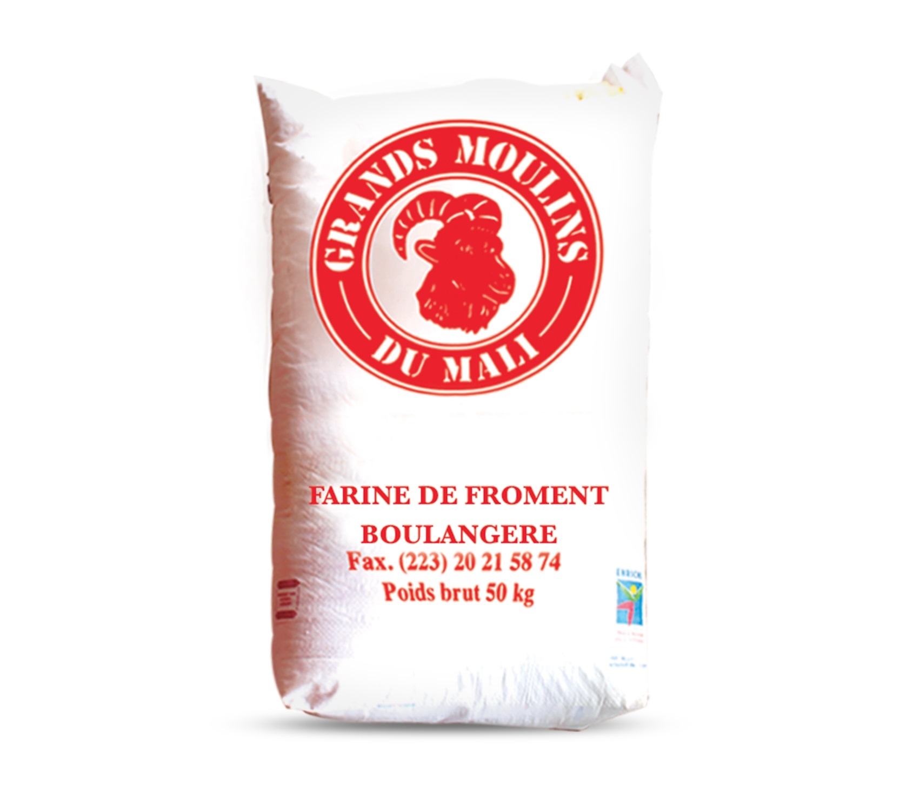

⭐ À LA UNE
GAMI inaugure son nouveau siège social dans la zone industrielle de Dakar
Le Groupe AMI — GAMI — a officiellement inauguré ses nouveaux locaux dans la zone industrielle de Dakar, marquant une étape majeure dans la modernisation du groupe et son passage du GIE AMI à GAMI.

Transporteurs
Lancement de la plateforme digitale transporteurs GAMI pour l'Afrique de l'Ouest
La nouvelle plateforme permet aux transporteurs agréés de consulter les offres GAMI et de répondre en temps réel via WhatsApp.

GMM
Séminaires de formation Bunafama — Déploiement de l'aliment bétail GMM
Les GMM ont organisé des séminaires de formation pour les éleveurs maliens autour de Bunafama, leur aliment composé bétail/volaille/poisson produit à Koulikoro.

Activités
Sampling Ami Fruité — Opérations de dégustation à travers Bamako
La SEMM a lancé une opération de sampling pour faire découvrir la gamme Ami Fruité dans les quartiers de Bamako, avec des résultats très positifs.
Transporteurs
GAM Transit renforce son parc de camions — Nouveaux véhicules pour l'export Mali
Dans le cadre de son développement, GAM Transit prévoit de doubler son parc de camions pour renforcer sa capacité d'exportation sur les corridors régionaux.

Groupe
GAMI recrute 50 nouveaux techniciens dans le cadre de son plan d'expansion 2025
Dans le cadre de sa stratégie de croissance, GAMI ouvre 50 postes de techniciens répartis sur ses 3 filiales.

GMM
GMM remporte le prix "Best Industrial Maintenance" au Forum Mines Afrique 2024
Distinction obtenue pour l'excellence de nos interventions et notre approche innovante de la maintenance préventive.